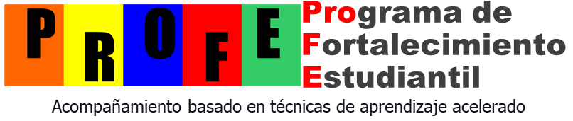

Bootcamp de 5 días para integrar con fluidez
Integrar no es memorizar fórmulas: es no saturar tu memoria de trabajo. En cinco sesiones con cronómetro pasas de un cálculo lento y agotador a reconocer el método casi de inmediato, y mides tu avance con datos reales.
Empieza por el manual: ahí están las reglas del juego.Cada guía está diseñada con base en la ciencia del aprendizaje. Funciona solo si respetas estas reglas.
Cada día une una técnica de integración con una herramienta de aprendizaje.
Mueve los controles con tus resultados de una fase y mira en qué cuadrante está tu cerebro y qué hacer a continuación.
Al terminar cada fase, reporta tu porcentaje de aciertos, tu tiempo y tu índice de esfuerzo (qué tan pesada se sintió la tarea, de 0 a 100 %). Así ves tu evolución día a día.